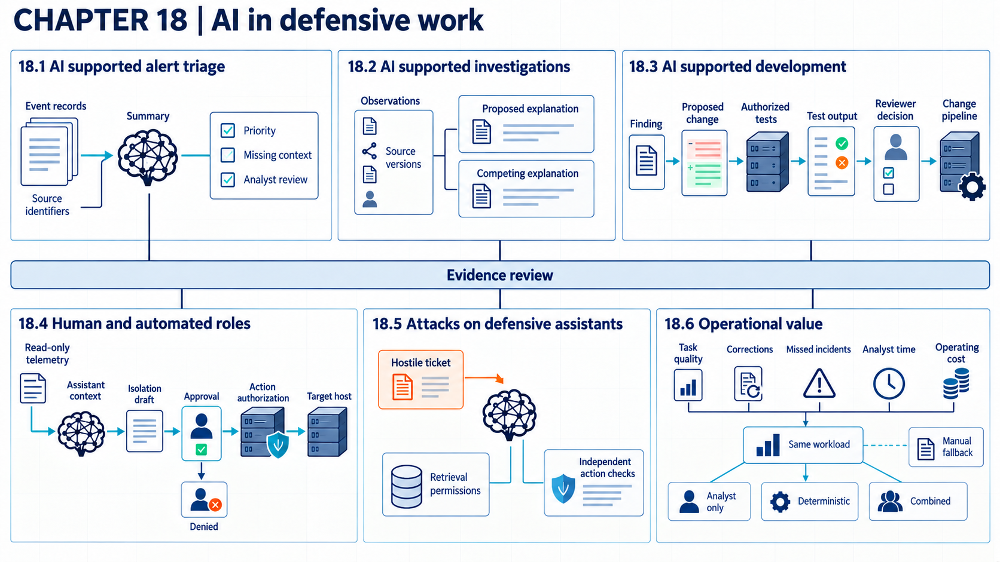

18 Evaluating AI for defense
A defensive AI assessment measures useful security work while keeping human judgment, data access, and action authority visible.
A security team’s AI assistant reads material that attackers can shape: alerts, logs, tickets, and threat reports. A summary that reads well can still drop the event that mattered. An assistant allowed to act can turn a wrong guess into a changed system. Claims of defensive value therefore need the same evidence as claims about attackers, including errors, correction work, and cost as well as speed.
Suppose an organization’s analysts use an assistant that reads synthetic alerts and intelligence documents through an external model and a retrieval application. The model proposes responses. The analyst keeps judgment over priority and next steps, and a separate connected service checks permissions and required approvals before executing any action. A useful summary is not yet a security decision. Evaluation must count source support, correction effort, unauthorized effects, and analyst time before any claim of defensive value.

18.1 AI-assisted alert triage
An AI assistant can help an analyst connect related events and draft an alert summary, but the summary must preserve the evidence needed to check it. Inputs include normalized events, identity and asset context, prior activity, and the rule that produced the alert. Evaluation counts missed incidents, unsupported statements, correction work, and analyst time as well as apparent speed.
The NIST incident-response profile1 calls for analysis and correlation of detected events before responders place them in context and route them. The NIST incident-response profile2 also calls for validation and categorization of reports before prioritization and response. The profile does not evaluate AI summaries or define how they should express uncertainty.
In the example organization’s workflow, the assistant links each summary sentence to event identifiers and marks missing context. The analyst can inspect the source events before accepting a priority or incident declaration. The triage application enforces this rule. It marks the assistant’s draft as unreviewed until factual statements carry supporting event identifiers and the analyst has accepted the priority. Identifiers make the evidence inspectable but do not prove that it supports the statement. An analyst can still declare an incident directly from source evidence when an incomplete draft would delay an urgent response. A baseline runs the same alert set without the assistant. The test reports unsupported statements out of all factual statements assessed and missed incidents out of all incidents in the reference record. It also reports the alert count and total analyst minutes, including rejected drafts and corrections, per accepted alert.
Source linking and review add latency. The check still fails when the event store is incomplete or the analyst accepts a weak summary. Recovery returns the alert to the ordinary queue and keeps the draft, the correction, and the source events. Results hold for the tested alert population only. No field study cited in this chapter measures AI-assisted triage quality, time, correction, and missed incidents. The same rule of showing the evidence carries into investigation and threat intelligence.
18.2 Evidence in assisted investigations
An investigation claim such as “this host is part of the intrusion” is only as good as the evidence under it. Investigation moves from observations to explanations. An observation records something seen. An indicator describes a pattern that may support detection or assessment. The assistant can retrieve reports and connect objects. It must also preserve external references, versions, confidence, and competing explanations, so that the analyst can inspect the basis of a conclusion.
Structured Threat Information Expression (STIX) 2.13 separates observations, indicators, relationships, external references, confidence, and object versions in a structured threat-intelligence model. STIX4 also defines confidence as a common property and specifies mappings to other confidence scales. The schema can carry evidence and confidence. It cannot make the assistant’s inference correct.
The example assistant produces a claim, supporting observation identifiers, external references, confidence method, and at least one plausible alternative when the evidence permits. A confidence number without a method remains a label. Version links show when a report changed. This source-linked record supports later vulnerability and development decisions without hiding uncertainty.
Example
Checking an intrusion claim. In this invented read-only investigation, proxy event E41 in export PX7 version 1 records host H17 contacting 203.0.113.8 at 10:02. External report TI9 version 2, paragraph 4, identifies that address as command infrastructure in an earlier incident. The assistant proposes “H17 is part of the intrusion,” linking E41 and TI9. Its assessment is tentative: a shared destination supports investigation but supplies no evidence of an unauthorized process. An approved security scanner could produce the same contact.
The analyst checks endpoint event E42 in export EP3 version 1. Assume it identifies the scheduled scanner process and arguments matching approved job JOB6 version 3 at 10:02. The analyst accepts the narrower statement that H17 contacted the address during that scan and keeps the intrusion claim unresolved. The case record retains both observations, the report reference and version, the alternative explanation, the qualitative confidence basis, and the review decision. Complete identifiers make this reasoning inspectable. They do not turn the destination match into proof of intrusion, and the approved scan does not establish that the host is otherwise uncompromised.
The investigation workspace enforces the record. Before a claim enters a case record, the workspace checks for a source identifier, source version, confidence method, and review status. It then accepts the claim, returns it, or marks it unresolved. A test counts complete claim records over all assistant claims, and separately counts accepted claims later corrected. The check costs analyst time and storage. Copied text that reaches another system without its record escapes the check, and even an attached record does not make a claim true. Recovery withdraws the claim, restores the earlier case state, and alerts affected analysts.
18.3 AI-assisted vulnerability work
Google Project Zero5 reported on November 1, 2024, that its AI tool Big Sleep had found an exploitable stack buffer underflow in SQLite before a release included the flaw. DARPA6 reported on August 8, 2025, that systems in its AI Cyber Challenge (AIxCC) finals found 54 of 63 synthetic vulnerabilities and patched 43. They also found 18 real vulnerabilities. These results show AI tools finding flaws, and in AIxCC producing patches, under the conditions each report describes. They do not show that a generated patch is safe to merge into another codebase. Finding a flaw and fixing it safely are separate results, and each fix needs its own evidence.
For vulnerability and development work, the assistant may explain a finding or inspect dependency data. It may also draft a patch or propose a test. The security decision still depends on the real code, build, deployment conditions, and authorization for testing. A generated fix needs review and execution evidence rather than acceptance based on a plausible explanation.
The NIST Secure Software Development Framework7 calls for verification of third-party components, code review, executable-code testing, and triage of results. Pearce et al.8 found vulnerable suggestions in some scenarios tested with an early GitHub Copilot version. That finding does not transfer automatically to later models or workflows with independent review.
The organization links the assistant’s recommendation to the finding, dependency identity, generated diff, authorized test environment, test output, reviewer, and deployment result. Production testing requires separate permission. A rejected suggestion remains part of evaluation evidence because it contributes to correction cost. These records separate recommendation quality from the authority to act.
The change pipeline turns these records into a gate. Before a merge or deployment, it checks the finding identifier, repository revision, test-environment authorization, reviewer decision, and required test result. Incomplete or failed candidates are blocked. Evaluation reports accepted fixes, rejected fixes, and later regressions over all submitted suggestions, plus review minutes per accepted fix. The gate delays delivery and can miss a defect outside the test set. It covers only the tested deployment conditions, so recovery reverts to the recorded accepted revision and revokes temporary test access.
18.4 Permissions for security assistants
An assistant allowed to request changes to hosts or accounts gives an attacker a possible route to those changes if the attacker can steer its output and the action service does not independently enforce authorization. How much it may do is a design choice, and the options range from summary to constrained execution. A suggested action tells the analyst what could be done. A drafted action prepares exact arguments for review.
Least privilege and complete mediation support granting only task-specific rights and checking access when the protected object is used (Saltzer and Schroeder9). The Model Context Protocol (MCP)10, an interface protocol for exposing tools to model applications, recommends making exposed tools visible to users and preserving their ability to deny an invocation. These principles do not identify the best division of labor or measure the quality of human approval.
In the example organization, the assistant may query read-only telemetry and draft a host-isolation request. A separate service resolves the host and checks policy. Before execution, it displays the host, operation, and effect, and records analyst approval, keeping judgment and authority visible. Only then does the service perform constrained execution, which runs only an authorized operation within fixed limits. A request outside those limits goes to escalation, which transfers the decision and evidence to a person or service with the required authority. Recovery tests cover an incorrect recommendation and a partial action. No study cited in this chapter compares analyst-only, assistant-only, and combined workflows under control. This authority map defines what an attacker could misuse.
The action service enforces the boundary by checking the analyst identity, target host, requested operation, approval, and current incident state. It allows only the approved action or returns a denial. Tests report unauthorized actions executed out of all unauthorized attempts and allowed actions completed correctly out of all allowed attempts. Partial completion is recorded separately. These denominators keep a service that blocks everything from appearing successful. Approval adds delay, while constrained execution adds engineering and support cost. A stale approval or alternate management interface can bypass the intended path. The test does not measure whether the recommendation itself was correct. Recovery cancels pending work and restores the host where possible, while irreversible effects receive escalation.
18.5 Attacks on defensive assistants
A defensive assistant consumes attacker-influenced material by design. Logs, tickets, repositories, malware reports, and intelligence documents can contain instructions or data crafted to influence its output. The resulting risk depends on sensitive telemetry, retrieval access, tool permissions, and retained memory available to the assistant.
Greshake et al.11 demonstrated indirect prompt injection through external content and effects on connected actions in selected systems. OWASP’s 2026 description12 includes tool output, retrieved content, and persistent memory as prompt-injection paths and links impact to available functions and permissions. The research demonstrations establish selected attack paths, while OWASP categorizes risks and recommends mitigations. Neither source proves that a current security assistant is vulnerable or that a proposed control works.
A test of the example assistant places a hostile instruction in a synthetic ticket that the assistant must summarize. The trace follows retrieval, context, response, proposed tools, and policy decisions. The expected result is an evidence-linked summary with no unauthorized query or action. This test counts failures alongside useful work when the organization measures operational value.
Two components carry the defense. The retrieval application limits eligible records, and the action service checks every proposed operation independently of model text. The test replays all hostile tickets under the specified identities and permissions. It reports summaries changed by hostile text, restricted records returned, and actions allowed. Filtering and independent authorization consume compute and review time. Encoded instructions, a compromised connector, or an unmediated tool path can defeat parts of the design. Recovery removes the ticket from active context and revokes affected credentials. It then restores the accepted configuration and retests the same cases. A clean run does not cover unseen instruction forms.
18.6 Measuring defensive AI value
XBOW13 reported on June 24, 2025, that its system ranked first on HackerOne’s US leaderboard. Of roughly 1,060 submissions, it reported 130 resolved and 303 triaged, alongside duplicates, informative reports, and pending reviews. Resolved reports are not the only evidence of accepted findings, but submission volume alone is not a validity rate. Industrial Cyber14 reported on September 9, 2026, that Dream’s Hero and Hercules system scored 96.6% on CyberGym in a vendor-run evaluation. The first report gives operational submission outcomes and the second relays a benchmark claim. Neither supplies the matched workload, full review effort, and operating cost needed for an organization’s deployment decision.
Operational value is the measured benefit of the assistant after errors, correction work, review, security controls, privacy effects, and total operating cost are included. A fair comparison uses the same alert or investigation workload and a human or deterministic baseline. Quality measures depend on the decision, such as correct triage, supported findings, or safe completion.
The AI RMF MEASURE function15 calls for documented methods, metrics, test sets, limitations, human review, and monitoring. NIST AI 800-316 says the evaluation target should match the decision and separates item variation from repeated-trial variation. The publications do not supply an operational-value result for a security assistant.
The organization reports how often the task succeeds and how much analyst time and correction it requires. It also reports missed incidents, remaining consequential errors, and the cost of the system and its review. Sampling and uncertainty belong in the same report, because faster summaries do not justify deployment when they hide missed incidents or create unsafe actions. A field study that combines these measures for a security assistant is still needed. Chapter 19 (Comparing AI deployment options) uses this measured task and boundary to compare deployment options.
Operating fallback. The service owner operates a deterministic severity queue, which assigns priority using fixed rules rather than model-generated judgments. The owner also documents an analyst-only path for the same alert population. A continuity test records the share of alerts handled through each fallback during the outage. It also records time to first usable result and unresolved backlog at restoration. Maintaining parallel rules and analyst capacity raises ongoing cost. A fallback can fail when source systems are unavailable or staff capacity is exhausted. Once service returns, recovery handles queued work in priority order and reconciles duplicate decisions. One exercise does not establish capacity for a longer or broader disruption.
Example
Controlled comparison. Suppose an evaluation compares three read-only triage methods. It does not update model parameters or permit an external action. The task is to prioritize 120 synthetic alerts drawn from 12 incident stories. Senior analysts establish the reference priority and supporting event identifiers before the comparison. Each method receives the same alerts, identity context, time limit, and read-only access. Analyst assignments and case order are balanced so that seeing an alert in one condition does not reveal its answer in another. The comparison records analyst minutes for all 120 alerts, including review and correction. A consequential error is a final priority error that would miss the required response deadline under a rule fixed before scoring.
| Method | Correct priorities | Analyst minutes including review and correction | Drafts corrected | Consequential errors after review |
|---|---|---|---|---|
| Deterministic severity queue | 89 of 120 | 210 | 0 | 7 |
| Analyst without an assistant | 105 of 120 | 360 | 0 | 2 |
| Assistant draft with analyst decision | 108 of 120 | 240 | 14 | 1 |
All values are exercise values, not measured findings. The intermediate record for the combined method contains the assistant summary, cited event identifiers, analyst correction, and final priority. Compared with analysts working without the assistant, the combined method uses 360 minus 240, or 120 fewer analyst minutes, and makes one fewer consequential error. It assigns three more priorities correctly: 108 rather than 105. The fourteen corrected drafts show why accepted output alone is an incomplete measure. Because alerts share 12 incident stories, 120 alerts are not 120 independent incident samples. Results should also be examined by story. These illustrative differences motivate consideration of a limited read-only pilot, subject to predeclared error limits, security tests, review capacity, and cost. They do not establish that those release conditions have passed or justify autonomous response.
Note
Chapter checkpoint. Does the lower analyst time for the combined method justify giving the assistant permission to isolate hosts?
Answer. No. The evaluation measured read-only triage under analyst control. Host isolation changes external state and can interrupt service. That operating mode needs a separate authorization path, action tests, recovery tests, and evidence about harmful interventions. The comparison informs only the task and permissions that were tested. Even a read-only pilot remains conditional on the release criteria described above.
Triage outcomes, the division of work between analyst and assistant, and full operating cost still need stronger operational evidence.
Alex Nelson, Sanjay Rekhi, Murugiah Souppaya, and Karen Scarfone, Incident Response Recommendations and Considerations for Cybersecurity Risk Management: A CSF 2.0 Community Profile, NIST SP 800-61 Rev. 3 (2025), Table 3, DE.AE-02 through DE.AE-08, printed pp. 25–26, source.↩︎
Alex Nelson, Sanjay Rekhi, Murugiah Souppaya, and Karen Scarfone, Incident Response Recommendations and Considerations for Cybersecurity Risk Management: A CSF 2.0 Community Profile, NIST SP 800-61 Rev. 3 (2025), Table 3, RS.MA-02 and RS.MA-03, printed pp. 27–28, source.↩︎
Rich Piazza, Emily Ratliff, Stephan Relitz, and Christian Studer, eds., STIX Version 2.1 Errata 01, OASIS Standard incorporating Draft 01 of Errata 01 (April 2, 2025), sections 1.2.1–1.2.4, 2.5, 3.2, 3.6, 4.7, and 4.14, source.↩︎
Rich Piazza, Emily Ratliff, Stephan Relitz, and Christian Studer, eds., STIX Version 2.1 Errata 01, OASIS Standard incorporating Draft 01 of Errata 01 (April 2, 2025), section 3.2, “Common Properties,” confidence property, and Appendix A, “Confidence Scales,” source.↩︎
Google Project Zero, “From Naptime to Big Sleep: Using Large Language Models To Catch Vulnerabilities In Real-World Code,” Project Zero blog (November 1, 2024), source. The post reports one finding by the tool’s own developers and does not measure how often the tool finds real flaws.↩︎
DARPA, “AI Cyber Challenge marks pivotal inflection point for cyber defense,” DARPA news (August 8, 2025), source. The organizer reports 54 synthetic vulnerabilities found out of 63 challenges, 43 of those patched, and 18 non-synthetic vulnerabilities found. Competition scoring does not establish patch quality in another production deployment.↩︎
Murugiah Souppaya, Karen Scarfone, and Donna Dodson, Secure Software Development Framework (SSDF) Version 1.1: Recommendations for Mitigating the Risk of Software Vulnerabilities, NIST SP 800-218 (2022), practice PW.4.4, printed p. 13. PW.7.1–PW.7.2, p. 14. PW.8.2, p. 15, source.↩︎
Hammond Pearce et al., “Asleep at the Keyboard? Assessing the Security of GitHub Copilot’s Code Contributions,” 2022 IEEE Symposium on Security and Privacy, pp. 754–768, publication record. author manuscript, arXiv:2108.09293v3, abstract and sections IV–VI, especially “Threats to Validity,” PDF pp. 1 and 4–13. The experiments used the Copilot version, prompts, languages, and weakness scenarios described in the paper. They do not establish the security of current coding assistants.↩︎
Jerome H. Saltzer and Michael D. Schroeder, “The Protection of Information in Computer Systems,” Proceedings of the IEEE 63(9) (1975), pp. 1278–1308, section I.A.3, “Design Principles,” principle c, complete mediation, and principle f, least privilege, in the MIT author copy, source.↩︎
Model Context Protocol contributors, Model Context Protocol Specification, revision 2026-07-28, “Server Features,” “Tools,” “User Interaction Model,” source.↩︎
Kai Greshake et al., “Not What You’ve Signed Up For: Compromising Real-World LLM-Integrated Applications with Indirect Prompt Injection,” Proceedings of the Sixteenth ACM Workshop on Artificial Intelligence and Security (AISec) (2023), pp. 79–90, publication record. author manuscript, arXiv:2302.12173v2, section 3, manuscript pp. 3–5, and section 4.2, pp. 6–10. These are demonstrations in the tested integrations and simulated applications, not evidence that every current integration has the same vulnerability.↩︎
OWASP GenAI Security Project, OWASP GenAI LLM Top 10 2026, final source entries LLM01, descriptions and prevention or mitigation sections, repository revision 7e144e05142b. These entries identify risk paths and recommendations. They do not measure their prevalence or control effectiveness.↩︎
XBOW, “The Road to Top 1: How XBOW Did It,” XBOW blog (June 24, 2025), source. The company reports its own submission-status counts, including both triaged and resolved findings. Those categories are distinct, and the report does not provide a matched comparison of full operating costs.↩︎
Industrial Cyber News Desk, “Dream’s Hero scores 96.6% on CyberGym to rank first globally in autonomous cybersecurity research benchmark,” Industrial Cyber (September 9, 2026), source. The article reports a score from an evaluation run on the vendor’s own infrastructure, with no independent check.↩︎
Elham Tabassi, Artificial Intelligence Risk Management Framework (AI RMF 1.0), NIST AI 100-1 (2023), section 5.3, “MEASURE,” printed pp. 28–31, especially MEASURE 1.1–1.3, 2.1–2.7, and 4.1–4.3, source.↩︎
Drew Keller et al., Expanding the AI Evaluation Toolbox with Statistical Models, NIST AI 800-3 (2026), section 3.1.1, “Choosing an Accuracy Estimand,” printed p. 9, and sections 3.2–3.3.1, pp. 9–11, source.↩︎